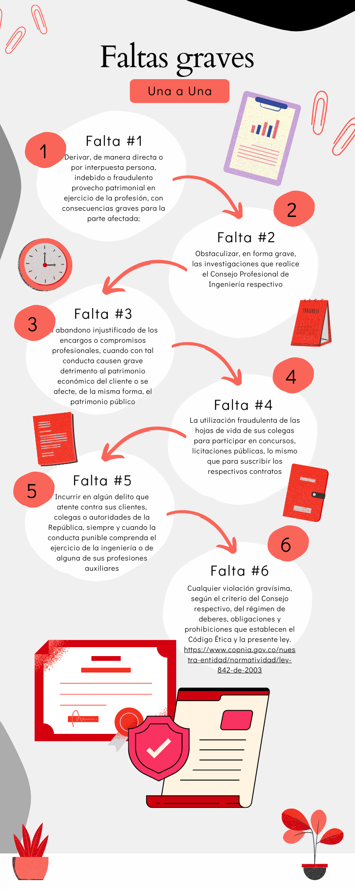
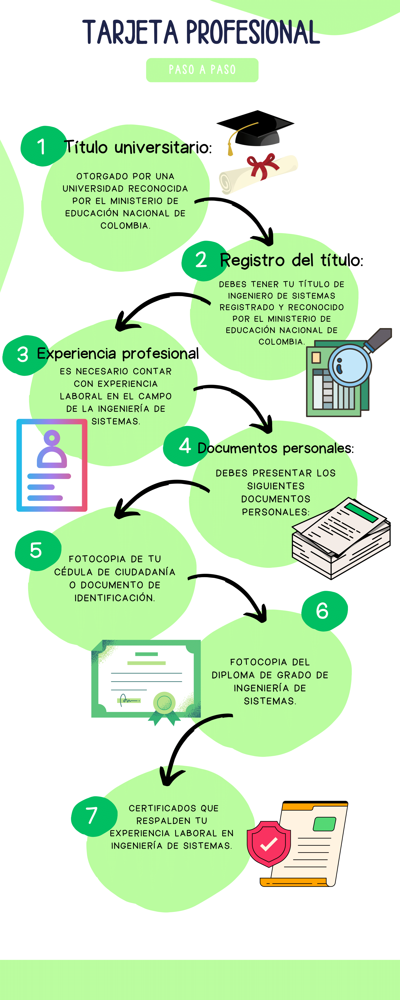

ARTÍCULO 53. FALTAS CALIFICADAS COMO GRAVÍSIMAS.
Se consideran gravísimas y se constituyen en causal de cancelación de la matrícula profesional, sin requerir la calificación que de ellas haga el Consejo respectivo, las siguientes faltas:
Derivar, de manera directa o por interpuesta persona, indebido o fraudulento provecho patrimonial en ejercicio de la profesión, con consecuencias graves para la parte afectada
Obstaculizar, en forma grave, las investigaciones que realice el Consejo Profesional de Ingeniería respectivo
El abandono injustificado de los encargos o compromisos profesionales, cuando con tal conducta causen grave detrimento al patrimonio económico del cliente o se afecte, de la misma forma, el patrimonio público
La utilización fraudulenta de las hojas de vida de sus colegas para participar en concursos, licitaciones públicas, lo mismo que para suscribir los respectivos contratos
Incurrir en algún delito que atente contra sus clientes, colegas o autoridades de la República, siempre y cuando la conducta punible comprenda el ejercicio de la ingeniería o de alguna de sus profesiones auxiliares
Cualquier violación gravísima, según el criterio del Consejo respectivo, del régimen de deberes, obligaciones y prohibiciones que establecen el Código Ética y la presente ley. https://www.copnia.gov.co/nuestra-entidad/normatividad/ley-842-de-2003
Requisitos tarjeta profesional.
- Título universitario: Debes contar con un título profesional en Ingeniería de Sistemas, otorgado por una universidad reconocida por el Ministerio de Educación Nacional de Colombia.
- Registro del título: Debes tener tu título de ingeniero de sistemas registrado y reconocido por el Ministerio de Educación Nacional de Colombia.
- Experiencia profesional: Es necesario contar con experiencia laboral en el campo de la ingeniería de sistemas. El tiempo de experiencia requerido puede variar según los lineamientos del CNI.
-
Documentos personales: Debes presentar los siguientes documentos personales:
- Fotocopia de tu cédula de ciudadanía o documento de identificación.
- Fotocopia del diploma de grado de ingeniería de sistemas.
- Certificados que respalden tu experiencia laboral en ingeniería de sistemas.
Pasos a seguir
- Reunir los documentos: Obtén copias de los documentos mencionados anteriormente, asegurándote de tenerlos completos y actualizados.
- Pago de la matrícula: Realiza el pago de la matrícula correspondiente al proceso de obtención de la tarjeta profesional. El valor puede variar y debes verificarlo en la página web del CNI.
- Solicitud: Llena la solicitud de obtención de la tarjeta profesional, la cual puedes encontrar en el sitio web del CNI. Completa todos los campos requeridos con la información solicitada.
- Presentación de documentos: Reúne todos los documentos mencionados anteriormente y preséntalos en la sede del CNI, o según las instrucciones especificadas en la convocatoria.
- Evaluación y revisión: El CNI evaluará tu solicitud y verificará los documentos presentados. Pueden llevar a cabo entrevistas o pruebas para verificar tus conocimientos y experiencia.
- Aprobación y expedición: Si tu solicitud es aprobada, el CNI expedirá tu tarjeta profesional de ingeniero de sistemas. Este documento certifica tu competencia y te habilita para ejercer la profesión en Colombia.
El Consejo Profesional Nacional de Ingeniería – COPNIA, creado mediante la Ley 94 de 1937, es la entidad pública que tiene la función de controlar, inspeccionar y vigilar el ejercicio de la ingeniería, de sus profesiones afines y de sus profesiones auxiliares en general, en el territorio nacional. https://www.copnia.gov.co/nuestra-entidad/quienes-somos